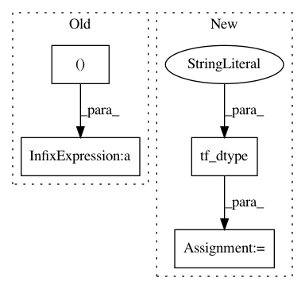

5da11b7fd2ae6d5371fe519dd12983383e533ff5,tensorforce/core/models/model.py,Model,tf_initialize,#Model#,572
Before Change
name = name + "_mask"
shape = action_spec["shape"] + (action_spec["num_values"],)
default = tf.constant(
value=True, dtype=util.tf_dtype(dtype="bool"), shape=((1,) + shape)
)
self.auxiliaries_input[name] = self.add_placeholder(
name=name, dtype="bool", shape=shape, batched=True, default=default
)
After Change
// default = tf.constant(
// value=True, dtype=util.tf_dtype(dtype="bool"), shape=((1,) + shape)
// )
shape = tf.concat(
values=(
tf.shape(
input=next(iter(self.states_input.values())),
out_type=util.tf_dtype(dtype="long")
)[:1],
tf.constant(
value=(action_spec["shape"] + (action_spec["num_values"],)),
dtype=util.tf_dtype(dtype="long")
)
), axis=0
)
default = tf.ones(shape=shape, dtype=util.tf_dtype(dtype="bool"))
shape = action_spec["shape"] + (action_spec["num_values"],)
self.auxiliaries_input[name] = self.add_placeholder(
name=name, dtype="bool", shape=shape, batched=True, default=default
In pattern: SUPERPATTERN
Frequency: 3
Non-data size: 4
Instances
Project Name: reinforceio/tensorforce
Commit Name: 5da11b7fd2ae6d5371fe519dd12983383e533ff5
Time: 2020-01-19
Author: alexkuhnle@t-online.de
File Name: tensorforce/core/models/model.py
Class Name: Model
Method Name: tf_initialize
Project Name: reinforceio/tensorforce
Commit Name: d1ae17e7f6a0916add0d2b4521acab3fbb42650e
Time: 2020-03-08
Author: alexkuhnle@t-online.de
File Name: tensorforce/core/models/model.py
Class Name: Model
Method Name: tf_initialize
Project Name: reinforceio/tensorforce
Commit Name: 5da11b7fd2ae6d5371fe519dd12983383e533ff5
Time: 2020-01-19
Author: alexkuhnle@t-online.de
File Name: tensorforce/core/models/model.py
Class Name: Model
Method Name: api_act